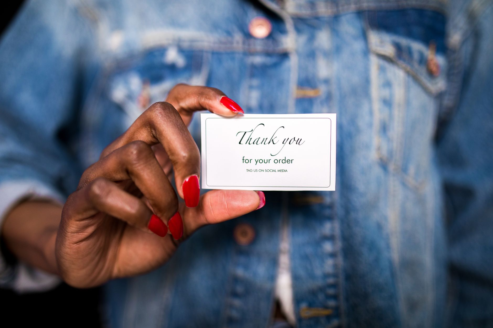

You’re pouring your heart and soul into your local business, offering great service and building relationships. But you’re noticing a pattern: great first-time customers, then… silence. You’re not alone. Many small business owners struggle to turn those initial positive experiences into repeat business. You’re spending time and money on marketing and a website, but not seeing the consistent flow of customers you need. The problem isn’t a lack of effort; it’s often a misguided approach to customer loyalty. Forget complicated point systems and elaborate rewards programs. Building genuine loyalty is about connection, simplicity, and making the next interaction effortless. Let’s ditch the fluff and focus on strategies that actually work for small businesses like yours.

Stop Trying to Build a Loyalty Program (The Wrong Way)
Traditional loyalty programs - those with points, tiers, and endless rules - often overwhelm customers and feel transactional. They’re complex to manage and rarely deliver the emotional connection you crave. Instead of investing in a system that feels like a chore for both you and your customers, let’s focus on building a genuine relationship. The most effective loyalty programs aren’t about rewards; they’re about remembering and valuing your customers. You don’t need a fancy digital system to build loyalty; you need to be present and attentive.
You can automate getting reviews too. Don't wait for people to ask. Set up a simple trigger. After a successful appointment, prompt them for a review. Make it easy for them. This gets you the feedback you need when it matters most. BrightLocal's 2026 Local Consumer Review Survey found that 49% of consumers trust online reviews as much as personal recommendations. That’s a powerful motivator.

Keep rewards simple. Don’t make it a massive points chart. Offer small, quick things based on how often they come back. For example, after five visits, give them a free small add-on. Keep it tangible. People like seeing a real benefit right away. Consider offering a small discount on their next service or a complimentary upgrade.
Get testimonials specific to your area. Forget vague compliments. Get reviews that mention your town or the exact problem you solved for a local. Those are way more believable. They show other local business owners that you actually help people right here. A testimonial from a neighbor is far more impactful than a generic praise statement.
Make it personal offline. A small, branded item or a handwritten note goes a long way. It makes the interaction real. It shows you care about the person, not just the transaction. That kind of connection builds real loyalty. Think about a simple, personalized thank-you card with a small discount code for their next visit.
The Three Simple Steps to Local Loyalty
The foundation of any successful loyalty strategy is simple: connection. It starts with a genuine effort to understand your customers and their needs. It’s about moving beyond just selling a product or service and building a relationship.
Step 1: Ask - and Really Listen
The first step is to just ask. You need a simple follow-up. After someone finishes a service, send a quick text or email. Ask how they are doing with the result. Don't sell anything. Just check in. Ask them about their experience. This builds a real connection. People remember when you check in, not when you push a sale. A simple script could be: “Hi {Customer Name}, just wanted to check in and see how things are going with {Service Provided}. Is everything working as expected? We’re always here to help!” Send this within 24-48 hours of the service completion.
Step 2: Get Reviews Where They Matter Most
Don't wait for people to remember to leave feedback. Prompt them right after a successful appointment. This makes it easy for them to share their experience when they remember it. Tie it to the specific service they just got. This gets you the kind of local proof that matters to customers. A good trigger message might be: “We’re so glad you enjoyed your {Service}! Would you mind taking a quick moment to share your experience on [Google/Facebook]? It really helps other local customers find us.” Make the link directly to your Google Business Profile or Facebook page. The same BrightLocal survey found that 97% of consumers read online reviews for local businesses.
Step 3: Rewards Should Be Easy to Understand
Skip the complicated point systems. Think small, immediate perks. If someone comes back five times, offer them a small, useful add-on. Maybe five visits gets you a free basic add-on. Simple things that matter to your customers are what get them to share their story. Consider offering a free consultation, a small discount on a future service, or a complimentary upgrade. Don’t overthink it.
Making Reviews Work For You (Beyond Asking)
Getting reviews isn’t just about asking; it’s about creating a positive experience that naturally leads to a review. Focus on exceeding customer expectations and providing exceptional service. When customers are genuinely happy, they’re more likely to leave a positive review.
You don’t need a fancy program to get more reviews. You need to be smart about asking for them. Start with a simple follow-up. After a job is done, send a quick email or text. Ask how things are going, not how to buy something. Keep it personal.
Set up a simple way to ask for a review. Don’t wait for people to remember to leave feedback. Prompt them right after a successful appointment. This makes it easy for them to share their experience when they remember it.
Keep the rewards small and clear. Forget complicated point systems. Offer something real. Maybe five visits gets you a free basic add-on. Simple things that matter to your customers are what get them to share their story.
Get testimonials that sound like they came from your town. Ask for reviews that mention your specific neighborhood or the exact service you did. Those specific notes build trust faster than general compliments.
Make the visit personal. Think small things you can give away. A small branded item or a handwritten note goes a long way. It shows you care about the person, not just the transaction. That personal touch turns a customer into a loyal supporter.
Turning Service into Repeat Customers
You need a way to keep the work coming back. It’s not about big loyalty programs. It’s about making the next interaction easy and valuable for the customer. Start with a simple follow-up. After a service is done, send a quick email or text. Ask them how everything is going. Don't try to sell anything right away. Just check in. This shows you care about their experience, not just the next sale.
Reviews are your best friend for local search. Don't wait for people to ask. Set up a simple trigger. Maybe it’s an automatic message right after they finish a job. Ask them to leave a quick review. Make it easy for them. People are more likely to do it when the experience is fresh in their minds. Focus on getting reviews that mention something specific to your area or service. That’s what local folks trust.
Rewards shouldn’t be complicated. Keep it small and direct. Skip the confusing points systems. Think about simple, immediate perks. If someone comes in five times, offer them a small, useful add-on. A free basic service upgrade. Or maybe a handwritten note with a small branded item. These offline touches make the connection real. They show you’re not just another faceless company. They show you’re a neighbor.
Building a Brand Around Relationships
Customer loyalty isn’t just about repeat business; it’s about building a brand that people connect with. When you prioritize genuine relationships, you create a community around your business. People are more likely to support businesses they feel connected to, even if the rewards aren’t extravagant. Consider hosting small local events, sponsoring a community initiative, or simply being a visible and engaged member of your neighborhood. A local business directory listing, like Yelp, can also help you build local awareness.
The Power of Personalization
Don’t treat every customer the same. Personalization is key to building loyalty. Remember their names, their preferences, and their past experiences. Use this information to tailor your interactions and offer relevant recommendations. A simple handwritten thank-you note, a personalized email, or a small discount on a product they’ve previously purchased can go a long way. According to a Salesforce study, 73% of consumers say personalization is important when interacting with a brand (Salesforce, 2021).
Moving Forward: Simple Steps, Lasting Results
Building customer loyalty isn’t about complex programs; it’s about consistently delivering exceptional service and building genuine relationships. Start with the three simple steps outlined above: ask, get reviews, and offer small, meaningful rewards. Focus on creating a positive experience that naturally leads to repeat business and word-of-mouth referrals. Remember, the most valuable asset you have is your customers - treat them with respect, appreciation, and a genuine desire to help.
Ready to see how we actually get your business found on Google? Contact us at /#contact.
Sources:
- BrightLocal. (2026). Local Consumer Review Survey. https://www.brightlocal.com/research/local-consumer-review-survey/
- Salesforce. (2021). Personalization Statistics. https://www.salesforce.com/resources/research/personalization-statistics/
Related
- Email Marketing Vs Social Media: Which Is Better for Local Businesses?
- Welcome Email Sequence For New Customers
- Automated Email Sequences for Local Business: Stop Losing Customers Before They Find You
Read next: Email Marketing Vs Social Media: Which Is Better for Local Businesses?